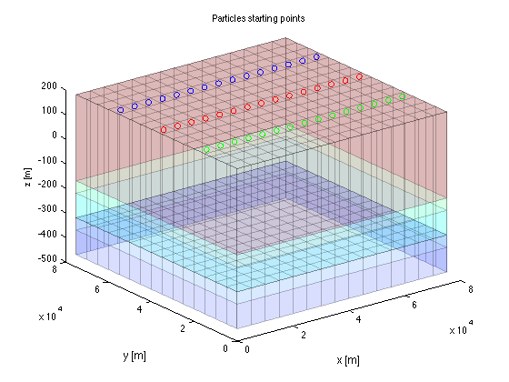

Visualization of steady model results with particle tracking
Contents
- Closing existing graphs and variables
- The options and steps will be outlined here
- First step: retrieve the basename of this model
- Get the heads and the budget info.
- Ways to show the data
- Show zoneBudget
- Plotting conductivities in a cross section along x-axis
- Plotting conductivities in a cross section along y-axis
- Plotting stream function
- Plotting head contours of all layers
- Show the particles generated by MODPATH
- Look at the endpoints of the particles tracked
- Look at the strating points of the particles tracked
- Plot path lines
- TO 130614
Closing existing graphs and variables
close all; clear variables;
The options and steps will be outlined here
Notice that there are many more visualization options. One of them are animations and video's that are generally used in combation with transient flow and with mass transport simulations. Here we only have a steady-steate model.
First step: retrieve the basename of this model
load name % retrieve basename stored in file name.mat load(basename) % get model arrays that were saved by mf_setup
Get the heads and the budget info.
H = readDat([basename '.HDS']); % read computed heads B = readBud([basename '.BGT']); % read ceomputed budgets
Reading MODFLOW binary output file <<generic_steady_modpath.HDS>> verbose= 0
Scanning headers
finished, 3 records scanned
File contains the following:
Number of records in file : 3
Number of stress userPeriods: 1
Number of time steps : 1
Number of layers : 3
Number of rows : 15
Number of columns : 15
Maximum time in file " 1
Reading requested data ...
3 records read.
. 1 records in output struct.
Trying to read generic_steady_modpath.BGT as BINARY file...it works!
Scanning 7 headers
finished, 7 records scanned
File contains the following:
Number of records in file: 7
Number of stress periods : 1
Number of time steps : 1
Number of layers : 3
Number of Rows : 15
Number of columns : 15
Number of unique labels : 7
CONSTANTHEAD
DRAINS
FLOWFRONTFACE
FLOWLOWERFACE
FLOWRIGHTFACE
RECHARGE
WELLS
Reading the requested data ...
Please wait while I'm getting the requested data ...
....... 1 records in output struct.
Ways to show the data
Show zoneBudget
generate a 3D zone array with zones 1, 2 and 3 corresponding to layers 1, 2, and 3. Then request the zoneBudget
zoneArray = gr.const([1 2 3]); % generate the zoneArray zonebudget(B,zoneArray,1); % request zonebudget for layer 1 zonebudget(B,zoneArray,2); % same for layer 2 zonebudget(B,zoneArray,3); % same for layer 3 zonebudget(B,zoneArray,[1 2 3]); % same for all layers combined
============================================
zoneBudget will be computed for zones: 1
Budget [consistent model units] for period=1, itsp=1:
BUDGET FOR ZONE 1 -----IN----- ----OUT-----
total for CONSTANTHEAD = 0.00 6558857.91
total for FLOWRIGHTFACE = 0.00 -0.00
total for FLOWFRONTFACE = 0.00 -0.00
total for FLOWLOWERFACE = 28091.22 630890.85
total for WELLS = 0.00 1200000.00
total for DRAINS = 0.00 2138342.46
total for RECHARGE = 10500000.00 -0.00
------------ ------------
total for ZONE 1 = 10528091.22 10528091.22
total net ZONE 1 = 0.00
============================================
zoneBudget will be computed for zones: 2
Budget [consistent model units] for period=1, itsp=1:
BUDGET FOR ZONE 2 -----IN----- ----OUT-----
total for CONSTANTHEAD = 0.00 302799.63
total for FLOWRIGHTFACE = 0.00 -0.00
total for FLOWFRONTFACE = 0.00 -0.00
total for FLOWLOWERFACE = 827816.30 325016.67
total for WELLS = 0.00 200000.00
total for DRAINS = 0.00 -0.00
total for RECHARGE = 0.00 -0.00
------------ ------------
total for ZONE 2 = 827816.30 827816.30
total net ZONE 2 = -0.00
============================================
zoneBudget will be computed for zones: 3
Budget [consistent model units] for period=1, itsp=1:
BUDGET FOR ZONE 3 -----IN----- ----OUT-----
total for CONSTANTHEAD = 0.00 -0.00
total for FLOWRIGHTFACE = 0.00 -0.00
total for FLOWFRONTFACE = 0.00 -0.00
total for FLOWLOWERFACE = 296925.45 196925.45
total for WELLS = 0.00 100000.00
total for DRAINS = 0.00 -0.00
total for RECHARGE = 0.00 -0.00
------------ ------------
total for ZONE 3 = 296925.45 296925.45
total net ZONE 3 = 0.00
============================================
zoneBudget will be computed for zones: 1 2 3
Budget [consistent model units] for period=1, itsp=1:
BUDGET FOR ZONE 1 2 3 -----IN----- ----OUT-----
total for CONSTANTHEAD = 0.00 6861657.54
total for FLOWRIGHTFACE = 0.00 -0.00
total for FLOWFRONTFACE = 0.00 -0.00
total for FLOWLOWERFACE = 0.00 -0.00
total for WELLS = 0.00 1500000.00
total for DRAINS = 0.00 2138342.46
total for RECHARGE = 10500000.00 -0.00
------------ ------------
total for ZONE 1 2 3 = 10500000.00 10500000.00
total net ZONE 1 2 3 = 0.00
Plotting conductivities in a cross section along x-axis
This is done using the method plotXSec of the gridObj
gr.plotXSec(1,'figure','xsec','title','Conductivities along y-axis','fontsize',14,'all','lay',HK,'cbd',VKCB); hb = colorbar; set(get(hb,'title'),'string','conductivity'); % Plot the heads along row iy onto this XSection iy = 8; h(1) = plot(gr.xm,XS(H(end).values(iy,:,1)),'b','linewidth',2); % head in layer 1 h(2) = plot(gr.xm,XS(H(end).values(iy,:,2)),'r','linewidth',2); % head in layer 2 h(3) = plot(gr.xm,XS(H(end).values(iy,:,3)),'k','linewidth',2); % head in layer 3 legend(h,'Layer 1','Layer 2','Layer 3'); % legend, using the handles to the 3 lines
Plotting conductivities in a cross section along y-axis
This is done using method plotYsec instead of plotXsec of the gridObj
gr.plotYSec(1,'figure','ysec','title','Conductivities along x-axis','fontsize',14,'all','lay',HK,'cbd',VKCB); hb = colorbar; set(get(hb,'title'),'string','conductivity'); % plot the heads onto this XSec along column ix ix = 8; h(1) = plot(gr.ym,YS(H(end).values(:,ix,1)),'b','linewidth',2); % layer 1 h(2) = plot(gr.ym,YS(H(end).values(:,ix,2)),'ro','linewidth',2); % layer 2 h(3) = plot(gr.ym,YS(H(end).values(:,ix,3)),'k','linewidth',2); % layer 3 legend(h,'Layer 1','Layer 2','Layer 3'); % legend using the handles to the 3 lines
Plotting stream function
The figure is 3D so the stream function cannot be shown
Plotting head contours of all layers
figure('name','contours of heads','position',screenPos(0.6)); % fig = 60% of screen ax(1) = subplot(2,2,1,'nextplot','add'); % axis to plot layer 1 ax(2) = subplot(2,2,2,'nextplot','add'); % axis to plot layer 2 ax(3) = subplot(2,2,3,'nextplot','add'); % axis tt plot layer 3 hrange = ContourRange(H,50); % get a useful set of contour elevations
Plot the contours for the three layers
for ia=1:3 xlabel(ax(ia),'x [m]'); ylabel(ax(ia),'y [m]'); % axis labels title(ax(ia),sprintf('Heads layer %d',ia)); % title h = colorbar('peer',ax(ia)); title(h,'head'); % colorbar for heads contourf(ax(ia),gr.xm,gr.ym,H(end).values(:,:,ia),hrange); % contours % plot well locations of wells pertaining to each of the layers % plotting is done using method plotXY of wellObj % selection of wells is done using [well.iLay]==ia well([well.iLay]==ia).plotXY(ax(ia),'marker','o','markerEdgeColor','r'); end
Show the particles generated by MODPATH
figure; hold on; view(3); xlabel('x [m]'); ylabel('y [m]'); zlabel('z [m]'); % Plot the gridObj as a mesh (transparent) gr.plotMesh('faceAlpha',0.15); pGrp.plot(); % plot the particles title('Particles starting points');
Look at the endpoints of the particles tracked
pGrp = pGrp.getEndPoints('mp6.endp'); % get end points %pGrp.dispEndPoints(); pGrp.endPointStatistics; %pGrp.plotEndPoints(1,'ko');
# MATLAB readEndPoints 15-Jun-2013 03:20:20
# Statistics for endpoints of group 1, 'generic_steady_modpath'
Total nr of endpoints = 84
pending = 0
active = 0
normally terminated = 84
zoneTerminated = 0
unreleased = 0
stranded = 0
# ==============================
# Statistics for endpoints of group 2, 'generic_steady_modpath'
Total nr of endpoints = 84
pending = 0
active = 0
normally terminated = 84
zoneTerminated = 0
unreleased = 0
stranded = 0
# ==============================
# Statistics for endpoints of group 3, 'generic_steady_modpath'
Total nr of endpoints = 84
pending = 0
active = 0
normally terminated = 84
zoneTerminated = 0
unreleased = 0
stranded = 0
# ==============================
Look at the strating points of the particles tracked
pGrp.plotStartPoints('b');
Plot path lines
pGrp = pGrp.getPathLines('mp6.plines'); pGrp.plotPath('b'); view(3);
mpath_particleGroupObj: Reading path lines ... # MATLAB readPath 15-Jun-2013 03:20:21 readPath: Reading <<19432>> records from path line file <<mp6.plines>> ... ...................... <<19432>> lines read (thanks for waiting) # Statistics for path file mp6.plines Total nr of points = 102 Total nr of time steps = 1 Min time = 0 Max time = 1.30825e+06 # ============================== Sorting pathline points ... done Plotting pathlines Group 3, sorting, plotting, done. Group 2, sorting, plotting, done. Group 1, sorting, plotting, done.